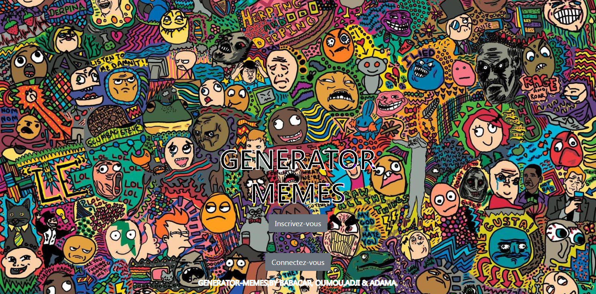

<!--
  Generated template for the PortofolioPage page.

  See http://ionicframework.com/docs/components/#navigation for more info on
  Ionic pages and navigation.
-->
<ion-header>

  <ion-navbar>
      <button ion-button menuToggle>
          <ion-icon name="menu"></ion-icon>
        </button>
        <ion-title style=" background-image: linear-gradient(45deg,#9fbaa8,#31354c);">portofolio</ion-title>
      </ion-navbar>
    
    </ion-header>
    
    
    <ion-content padding class="card-background-page">
    
    
        <ion-card >
          
          <!-- <div class="card-title">Annuaire de film</div> -->
         
        </ion-card>
      
        <ion-card>
          
          <!-- <div class="card-title">Meme Generator</div> -->
         
        </ion-card>
      
        <ion-card>
          
          <!-- <div class="card-title">Ceeddofile</div> -->
          
        </ion-card>
      
        <ion-card>
          
          <!-- <div class="card-title">Explorer de fichier</div> -->
          
        </ion-card>
      
    </ion-content>
    